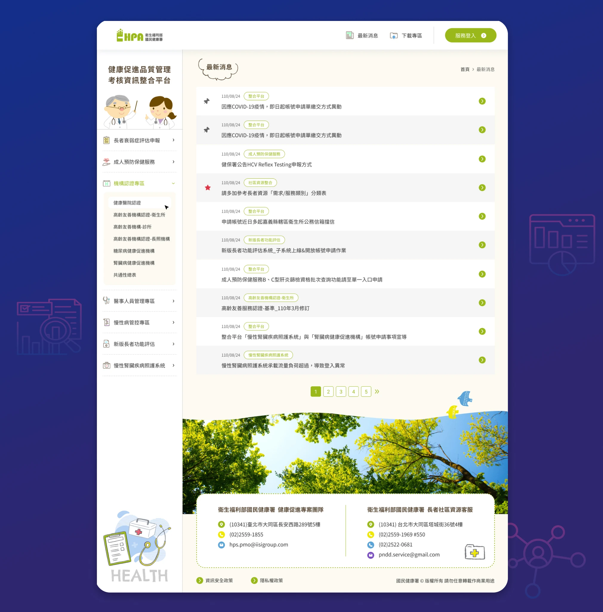

背景與挑戰
原平台存在三個顯著的使用者體驗問題：
- 資訊層級混亂：任務、課程、公告、使用者狀態同時堆疊在畫面上，使用者無法快速判斷下一步該做什麼
- 操作指引不明：關鍵功能缺乏清楚的視覺導引，使用者需要靠閱讀而非直覺來找到操作路徑
- 視覺過時：介面的不一致性與缺乏清晰度，削弱了平台作為健康服務的專業可信度

設計策略
認知重排策略
重新設計首頁，依序回答三個基本問題：登入後我是誰、現在最該做什麼、完成後的回饋。將主要行動與輔助資訊分離，降低認知負擔。
資訊架構重整
依據使用頻率與任務流程重新組織功能。重要任務維持可掃描性，次要資訊延遲呈現，減少決策干擾。
視覺層級與行為引導
透過主次按鈕的差異化設計、模組化卡片系統、策略性的留白，建立隱性的導覽線索引導使用者操作。
專業且親和的視覺風格
色彩調性朝向健康、安心、穩定的方向精煉，移除裝飾性元素，建立可複用的設計模式並保持結構彈性。

設計價值
Redesign
不只是「讓介面變好看」，更重要的是重新建立使用者與系統之間的信任關係。
這個專案透過系統性的資訊架構重整和認知負擔的降低，讓一個功能複雜的公共平台變得可理解、可操作、可信賴。設計過程中建立的模組化元件系統，也為未來的功能擴充提供了可擴展的基礎。